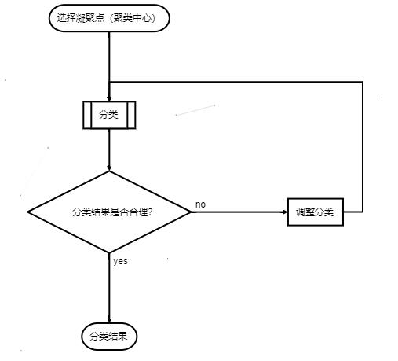
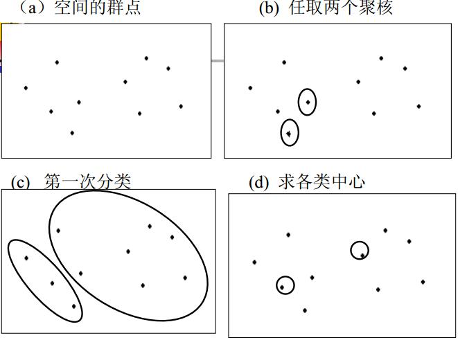
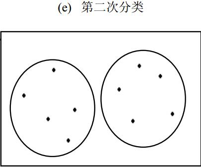
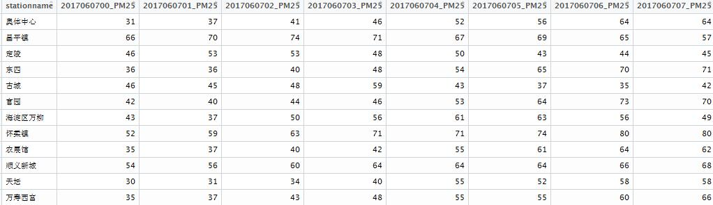
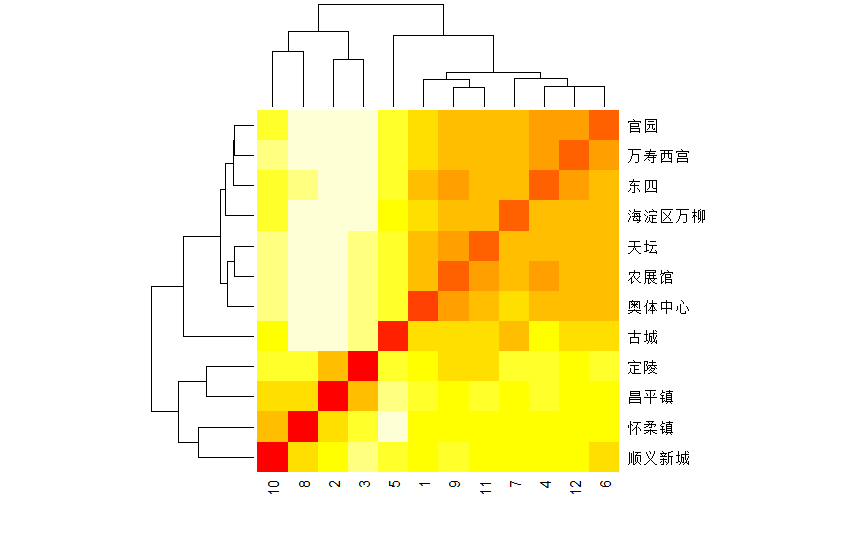
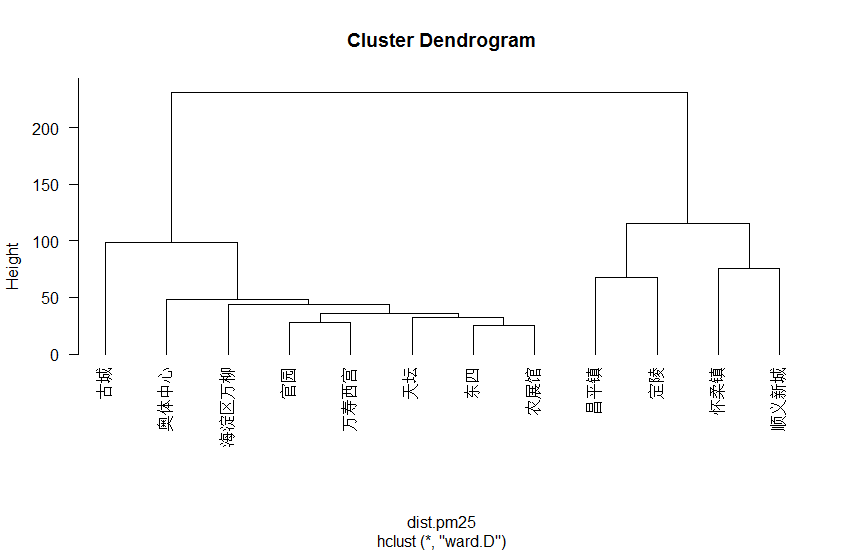
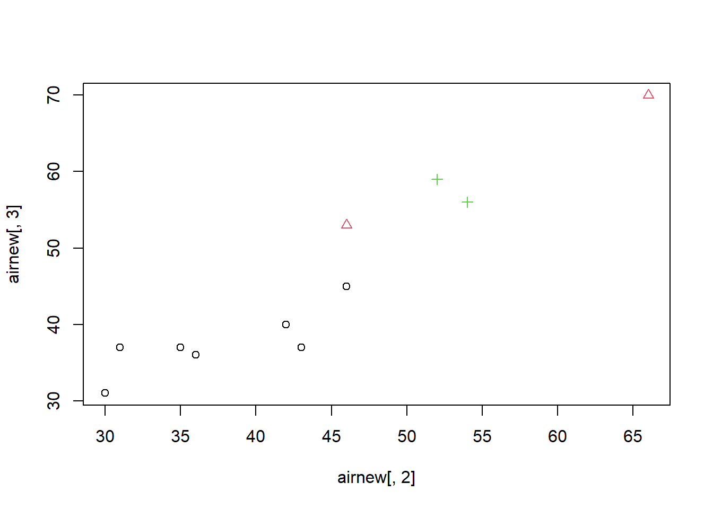
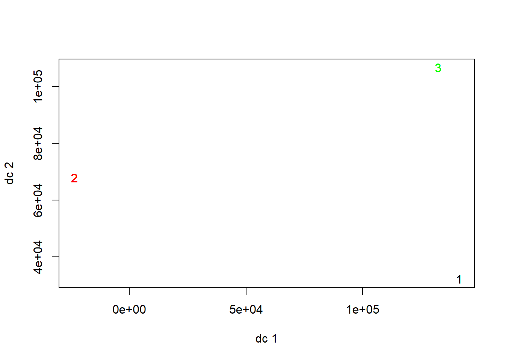
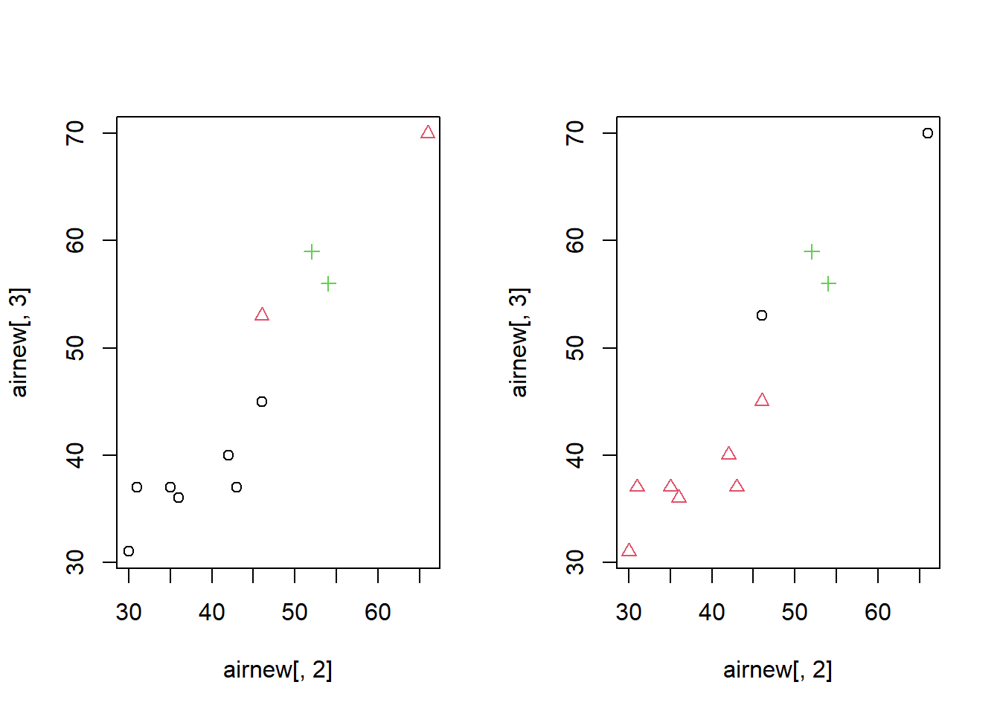
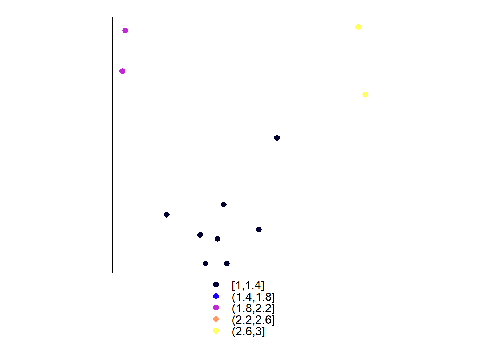

第 10 章 Cluster Analysis
本篇是第十章，内容是聚类分析。由于之后的几章是典型的分析方法。而且在14章的案例里面可能不会体现，所以内容里会渗透较多的R语言操作。
10.1 多元分布基本概念
在研究实际问题的时候，我们经常遇到的是多变量的问题，由于指标间相互不独立，单独割裂开来分别研究分析，不能从整体上把握所研究问题的实质。所以我们必须对多元变量及其分布进行统计和分析，在地学领域这种问题比比皆是，这里就不展开阐述了，接下来是一堆纯数学概念，数学恐惧者慎入，这部分的重点应该是关于协方差矩阵。一般来说，假设所研究的问题有p个指标，进行了n次独立观测，得到了np个数据。那么对于单次独立观测，我们定义随机向量（Random Vector）为：\(x=(x_1,x_2,\cdots,x_p)'\)，其概率分布函数定义为
\[F(a_1,a_2,\cdots,a_p)=P(x_1\le a_1,x_2\le a_2,\cdots,x_p\le a_p)\]
分布函数的性质
- 非降的右连续函数
- 分布函数的取值范围为[0，1]，即\(0\le F(a_1,a_2,\cdots,a_p)\le 1\)
- 分布函数当变量取值为无穷大时，函数值收敛到1，即\(F(\infty,\infty,\cdots,\infty)=1\)
多元概率密度函数
随机向量\(x=(x_1,x_2,\cdots,x_p)'\)的分布函数可以表示为
\[F(a_1,a_2,\cdots,a_p)=P(x_1\le a_1,x_2\le a_2,\cdots,x_p\le a_p)=\int_{-\infty}^{a_1}\cdots\int_{-\infty}^{a_p}f(x_1,x_2,\cdots,x_p)dx_1\cdots dx_p\] 则称\(x=(x_1,x_2,\cdots,x_p)'\)为连续型随机变量，称\(f(x_1,x_2,\cdots,x_p)\)为其多元概率密度函数。若\(F(a_1,a_2,\cdots,a_p)\)在点\((x_1,x_2,\cdots,x_p)\)连续，则\(f(x_1,x_2,\cdots,x_p)=\frac{\partial^p}{\partial x_1\partial x_2\cdots\partial x_p}F(x_1,x_2,\cdots,x_p)\)且有\(1\ge F(x_1,x_2,\cdots,x_p)\ge 0,\int_{-\infty}^{a_1}\cdots\int_{-\infty}^{a_p}f(x_1,x_2,\cdots,x_p)dx_1\cdots dx_p=1\)。
数学期望
定义
\[\begin{bmatrix} x_{11} & x_{12} & \cdots & x_{1q} \\ x_{21} & x_{22} & \cdots & x_{2q} \\ \vdots & \vdots & & \vdots \\ x_{p1} & x_{p2} & \cdots & x_{pq} \end{bmatrix}\] 是由随机变量构成的随机矩阵，定义X的数学期望为
\[\begin{bmatrix} E(x_{11}) & E(x_{12}) & \cdots & E(x_{1q}) \\ E(x_{21}) & E(x_{22}) & \cdots & E(x_{2q}) \\ \vdots & \vdots & & \vdots \\ E(x_{p1}) & E(x_{p2}) & \cdots & E(x_{pq}) \end{bmatrix}\] 特别当q=1时，便可得到随机向量\((x_1,x_2,\cdots,x_p)'\)的数学期望为\(E(x)=(E(x_1),E(x_2),\cdots,E(x_p))'\)
协方差矩阵
设\(x=(x_1,x_2,\cdots,x_p)'\)和\(y=(y_1,y_2,\cdots,y_q)'\)分别为p维和q维随机向量，则其协方差矩阵为
\[E\begin {bmatrix} \begin {pmatrix} x-E(x_1) \\ x-E(x_2) \\ \vdots \\ x-E(x_p) \end{pmatrix} (y-E(y_1),(y-E(y_2),\cdots,(y-E(y_q) \end {bmatrix}\]
\[=\begin {pmatrix} cov(x_1,y_1) & cov(x_1,y_2) & \cdots & cov(x_1,y_q) \\ cov(x_2,y_1) & cov(x_2,y_2) & \cdots & cov(x_2,y_q) \\ \vdots & \vdots & & \vdots \\ cov(x_p,y_1) & cov(x_p,y_2) & \cdots & cov(x_p,y_q) \end {pmatrix}=cov(X,Y)\]
\(x=(x_1,x_2,\cdots,x_p)'\)的协方差矩阵为
\[\Sigma=Var(x)=\begin {pmatrix} var(x_1) & cov(x_1,x_2) & \cdots & cov(x_1,x_p) \\ cov(x_2,x_1) & var(x_2) & \cdots & cov(x_2,x_p) \\ \vdots & \vdots & & \vdots \\ cov(x_p,x_1) & cov(x_p,x_2) & \cdots & var(x_p) \end {pmatrix}\]
随机向量X的协方差矩阵Σ是非负定矩阵。设A是常数矩阵，b为常数向量，则 \(Var(AX+b)=AV(X)A'=A\Sigma A'\)。若\((x_1,x_2,\cdots,x_p)'\)的分量相互独立，则协方差矩阵除主对角线上的元素外均为零，即 \(\Sigma=Var(x)=\begin {pmatrix} var(x_1) & 0 & \cdots & 0 \\ 0 & var(x_2) & \cdots & 0 \\ \vdots & \vdots & & \vdots \\ 0 & 0 & \cdots & var(x_p) \end {pmatrix}\)
相关系数矩阵
若\(x=(x_1,x_2,\cdots,x_p)'\)和\(y=(y_1,y_2,\cdots,y_q)'\)分别是p维和q维随机向量，则其相关系数矩阵为
\[\rho (x,y)=\begin {pmatrix} \rho (x_1,y_1) & \rho (x_1,y_2) & \cdots & \rho (x_1,y_q) \\ \rho (x_2,y_1) & \rho (x_2,y_2) & \cdots & \rho (x_2,y_q) \\ \vdots & \vdots & & \vdots \\ \rho (x_p,y_1) & \rho (x_p,y_2) & \cdots & \rho (x_p,y_q) \end {pmatrix}\] 若\(\rho (x,y)=0\)，两随机向量相互独立。
10.2 数据的变换处理
数据变换是将原始数据矩阵中的每个元素按照某种特定的运算把它变成为一个新值，而且数值的变化不依赖于原始数据集合中其它数据的新值。事实上多元数据的变换处理通常是为了消除不同量纲的差异。较常用的数据变换如下：
- 中心化变换
中心化变换是一种坐标轴平移处理方法，它是先求出每个变量的样本平均值，再从原始数据中减去该变量的均值，就得到中心化变换后的数据。设原始观测数据矩阵为：
\[X= \begin{bmatrix} x_{11} & x_{12} & \cdots & x_{1q} \\ x_{21} & x_{22} & \cdots & x_{2q} \\ \vdots & \vdots & & \vdots \\ x_{n1} & x_{n2} & \cdots & x_{nq} \end{bmatrix} \] \[ x_{ij}^*=x_{ij}-\bar x_j (i=1,2,\cdots,n;j=1,2,\cdots,p) \]
中心化变换的结果是使每列数据之和均为0，即每个变量的均值为0，而且每列数据的平方和是该列变量样本方差的(n-1)倍，任何不同两列数据之交叉乘积是这两列变量样本协方差的(n-1)倍，所以这是一种很方便地计算方差与协方差的变换。
- 极差规格化变换
极差规格化变换是从数据矩阵的每一个变量中找出其最大值和最小值，这两者之差称为极差，然后从每个变量的每个原始数据中减去该变量中的最小值，再除以极差，就得到规格化数据。
\[x_{ij}^*=\frac{x_{ij}-min_{k=1,2,\cdots,n} (x_{kj})}{R_j} (i=1,2,\cdots,n;j=1,2,\cdots,p)\] \[R_j= max_{i=1,2,\cdots,n} (x_{ij})-min_{i=1,2,\cdots,n} (x_{ij}),0\le x_{ij}^*\le 1\] 经过极差规格化变换后，数据矩阵中每列即每个变量的最大数值为1，最小数值为0，其余数据取值均在0和1之间；并且变换后的数据都不再具有量纲，便于不同的变量之间的比较。
- 标准化变换
标准化变换首先对每个变量进行中心化变换，然后用该变量的标准差进行标准化。
\[x_{ij}^*=\frac{(x_{ij}-\bar x)}{S_j} (i=1,2,\cdots,n;j=1,2,\cdots,p)\]
\[S_j=\sqrt{\frac{1}{n-1}\sum_{i=1}^n(x_{ij}-\bar x_j)^2}\]
经过标准化变换处理后，数据矩阵中每列数据即每个变量的平均值为0，方差为1，且不再具有量纲，便于不同变量之间的比较。变换后，数据矩阵中任何两列数据乘积之和是所对应的两个变量相关系数的(n-1)倍，所以这是一种很方便地计算相关矩阵的变换。
- 对数变换
对数变换是将各个原始数据取对数，将原始数据的对数值作为变换后的新值。
\[x_{ij}^*=log(x_{ij})\]
10.3 聚类分析
聚类分析是一种分类技术。与多元分析的其他方法相比，该方法较为粗糙，理论上还不完善，但应用方面取得了很大成功。与回归分析、判别分析一起被称为多元分析的三大方法。
聚类的目的——根据已知数据（ 一批观察个体的许多观测指标），按照一定的数学公式计算各观察个体或变量（指标）之间亲疏关系的统计量（距离或相关系数等）。 根据某种准则（最短距离法、最长距离法、中间距离法、重心法等），使同一类内的差别较小，而类与类之间的差别较大，最终将观察个体或变量分为若干类。
聚类的种类——根据分类的方法可将聚类分析分为：系统聚类、快速聚类、有序聚类。根据分类的对象可将聚类分析分为：Q型——样品聚类clustering for individuals；R型——指标聚类clustering for variables。
数据结构
| individuals | \[X_1\] | \[X_2\] | \[\cdots\] | \[X_l\] |
|---|---|---|---|---|
| 1 | 28 | 1.0 | \[\cdots\] | 114 |
| 2 | 29 | 2.0 | \[\cdots\] | 117 |
| \[\cdots\] | \[\cdots\] | \[\cdots\] | \[\cdots\] | \[\cdots\] |
| i | \[x_{i1}\] | \[x_{i2}\] | \[\cdots\] | \[x_{il}\] |
| \[\cdots\] | \[\cdots\] | \[\cdots\] | \[\cdots\] | \[\cdots\] |
| 47 | 15 | 8 | \[\cdots\] | 64 |
| 48 | 16 | 7.5 | \[\cdots\] | 65 |
| \[\cdots\] | \[\cdots\] | \[\cdots\] | \[\cdots\] | \[\cdots\] |
| n | \[x_{n1}\] | \[x_{n2}\] | \[\cdots\] | \[x_{nl}\] |
10.4 样品间亲疏程度的测度
样品间亲疏程度的测度： 研究样品或变量的亲疏程度的数量指标有两种，一种叫相似系数，性质越接近的变量或样品，它们的相似系数越接近于1，而彼此无关的变量或样品它们的相似系数则越接近于0，相似的为一类，不相似的为不同类；另一种叫距离，它是将每一个样品看作p维空间的一个点，并用某种度量测量点与点之间的距离，距离较近的归为一类，距离较远的点属于不同的类。变量之间的聚类即R型聚类分析，常用相似系数来测度变量之间的亲疏程度。而样品之间的聚类即Q型聚类分析，则常用距离来测度样品之间的亲疏程度。
距离：假使每个样品有p个变量，则每个样品都可以看成p维空间中的一个点，n个样品就是p维空间中的n个点，则第i样品与第j样品之间的距离记为\(d_{ij}\)。
定义距离的准则：定义距离要求满足第i个和第j个样品之间的距离如下四个条件（距离可以自己定义，只要满足距离的这四个条件）。
- \(d_{ij}\ge 0\)对一切的i和j成立;
- \(d_{ij}=0\)当且仅当\(x_i=x_j\)成立;
- \(d_{ij}=d_{ji}\)对一切的i和j成立;
- \(d_{ij}\le d_{ik}+d_{kj}\)对于一切的i和j成立。
常用距离
设\(x_i=(x_{i1},x_{i1},\cdots,x_{ip})'\)和\(x_j=(x_{j1},x_{j1},\cdots,x_{jp})'\)是第i和j个样品的观测值，则二者之间的常用距离公式如下。
明氏距离(Minkowski)：
\[d_{ij}=(\sum_{k=1}^p \left |x_{ik}-x_{jk}|^q\right)^{\frac{1}{q}}\]
欧氏距离：
\[d_{ij}=\sqrt{\sum_{k=1}^p(x_{ik}-x_{jk})^2}\]
绝对距离：
\[d_{ij}=\sum_{k=1}^p|x_{ik}-x_{jk}|\]
Chebychev距离：
\[d_{ij}=max_{k=1}^p|x_{ik}-x_{jk}|\]
明氏距离主要有以下两个缺点 明氏距离的值与各指标的量纲有关，而各指标计量单位的选择有一定的人为性和随意性，各变量计量单位的不同不仅使此距离的实际意义难以说清，而且，任何一个变量计量单位的改变都会使此距离的数值改变从而使该距离的数值依赖于各变量计量单位的选择。明氏距离的定义没有考虑各个变量之间的相关性和重要性。实际上，明氏距离是把各个变量都同等看待，将两个样品在各个变量上的离差简单地进行了综合。
兰氏距离(Lance & Williams)：这是兰思和维廉姆斯(Lance & Williams)所给定的一种距离，其计算公式为：
\[d_{ij}(L)=\sum_{k=1}^p\frac{|x_{ik}-x_{jk}|}{x_{ik}+x_{jk}}\]
这是一个自身标准化的量，由于它对大的奇异值不敏感，这样使得它特别适合于高度偏倚的数据。虽然这个距离有助于克服明氏距离的第一个缺点，但它也没有考虑指标之间的相关性。
马氏距离(Mahalanobis)：这是印度著名统计学家马哈拉诺比斯(P.C． Mahalanobis)所定义的一种距离，其计算公式为：
\[d_{ij}^2=(x_i-x_j)'\Sigma^{-1}(x_i-x_j)\]
\(\Sigma\)表示观测变量之间的协方差短阵。在实践应用中，若总体协方差矩阵\(\Sigma\)未知，则可用样本协方差矩阵作为估计代替计算。马氏距离又称为广义欧氏距离。显然，马氏距离与上述各种距离的主要不同就是马氏距离考虑了观测变量之间的相关性。如果假定各变量之间相互独立，即观测变量的协方差矩阵是对角矩阵，则马氏距离就退化为用各个观测指标的标准差的倒数作为权数进行加权的欧氏距离。因此，马氏距离不仅考虑了观测变量之间的相关性，而且也考虑到了各个观测指标取值的差异程度。
斜交空间距离：由于各变量之间往往存在着不同的相关关系，用正交空间的距离来计算样本间的距离易变形，所以可以采用斜交空间距离。
\[d_{ij}=[\frac{1}{p^2}\sum_{h=1}^p\sum_{k=1}^p(x_{ih}-x_{jh})(x_{ik}-x_{jk})r_{hk}]^{\frac{1}{2}}\] 当各变量之间不相关时，斜交空间退化为欧氏距离。
配合距离
\[X_1=(V,Q,S,T,K) X_2=(V,M,S,F,K)\] \[d_{12}=\frac{m_1}{m_1+m_2}=\frac{no-pairs}{pairs+no-pairs}=\frac{2}{2+3}=\frac{2}{5}\]
适用于分类变量，尤其是名义尺度变量。
相似系数
研究样品间的关系常用距离，研究指标间的关系常用相似系数。相似系数常用的有夹角余弦和相关系数。
夹角余弦(Cosine)：夹角余弦是从向量集合的角度所定义的一种测度变量之间亲疏程度的相似系数。设在n维空间的向量 \[x_i=(x_{1i},x_{2i},\cdots,x_{ni})',x_j=(x_{1j},x_{2j},\cdots,x_{nj})'\]。
\[c_{ij}=\cos \alpha_{ij}=\frac{\sum_{k=1}^nx_{ki}x_{kj}}{\sqrt{\sum_{k=1}^nx_{ki}^2\sum_{k=1}^nx_{kj}^2}},d_{ij}^2=1-c_{ij}^2\]
相关系数是将数据标准化后的夹角余弦
\[x_i=(x_{1i},x_{2i},\cdots,x_{ni})',x_j=(x_{1j},x_{2j},\cdots,x_{nj})'\]
\[c_{ij}=\frac{\sum_{k=1}^n(x_{ki}-\bar x_i)(x_{kj}-\bar x_j)}{\sqrt{\sum_{k=1}^n(x_{ki}-\bar x_i)^2\sum_{k=1}^n(x_{kj}-\bar x_j)^2}}\]
距离和相似系数选择的原则
一般说来，同一批数据采用不同的亲疏测度指标，会得到不同的分类结果。产生不同结果的原因，主要是由于不同的亲疏测度指标所衡量的亲疏程度的实际意义不同，也就是说，不同的亲疏测度指标代表了不同意义上的亲疏程度。因此我们在进行聚类分析时，应注意亲疏测度指标的选择。通常，选择亲疏测度指标时，应注意遵循的基本原则主要有：所选择的亲疏测度指标在实际应用中应有明确的意义。如在经济变量分析中，常用相关系数表示经济变量之间的亲疏程度。适当地考虑计算工作量的大小。如对大样本的聚类问题，不适宜选择斜交空间距离，因采用该距离处理时，计算工作量太大。
亲疏测度指标的选择要综合考虑已对样本观测数据实施了的变换方法和将要采用的聚类分析方法。如在标准化变换之下，夹角余弦实际上就是相关系数；又如若在进行聚类分析之前已经对变量的相关性作了处理，则通常就可采用欧氏距离，而不必选用斜交空间距离。此外，所选择的亲疏测度指标，还须和所选用的聚类分析方法一致。如聚类方法若选用离差平方和法，则距离只能选用欧氏距离。
样品间或变量间亲疏测度指标的选择是一个比较复杂且带主观性的问题，我们应根据研究对象的特点作具体分析，以选择出合适的亲疏测度指标。实践中，在开始进行聚类分析时，不妨试探性地多选择几个亲疏测度指标，分别进行聚类，然后对聚类分析的结果进行对比分析，以确定出合适的亲疏测度指标。
10.5 类与类之间的距离
- 最短距离法(Nearest Neighbor)
- 最长距离法(Furthest Neighbor)
- 重心法(Centroid method)
- 类平均法(average linkage)——组间连接法(Between-groups Linkage)和组内连接法(Within-groups Linkage)
- Ward离差平方和法(Ward’s minimumvariance method)
10.6 系统聚类(hierarchical clustering method)
系统聚类的步骤
（1） 开始将n个样品各作为一类。
（2） 根据样品的特征，选择合适的距离公式，计算n个样品两两之间的距离，构成距离矩阵。
（3） 选择距离矩阵中最小的非对角线元素\(d_{pq}\)，将相应的两类\(G_p\)和\(G_q\)合并为一新类\(G_r={G_p,G_q}\)。
（4） 利用递推公式计算新类与当前各类的距离。 分别删除原矩阵的第p，q行和第p，q列，并新增一行和一列添上的结果，产生新的距离矩阵。
（5） 再合并、计算，直至只有一类为止。
（6） 画聚类图，解释。
- 最短距离法
定义距离：\(D_{pq}=Min{d_{ij}:x_i\in G_p,x_j\in G_q}\)，假设第p类和第q类合并成第r类，第r类与其它各旧类的距离按最短距离法为递推公式：
\[D_{rl}=Min{D_{pl},D_{ql}}\] \[l\neq p,q\]
- 最长距离法
定义距离：\(D_{pq}=Max{d_{ij}:x_i\in G_p,x_j\in G_q}\)，假设第p类和第q类合并成第r类，第r类与其它各旧类的距离按最长距离法为递推公式：
\[D_{rl}=Max{D_{pl},D_{ql}}\] \[l\neq p,q\]
- 中间距离法
递推公式：
\[D_{lr}^2=\frac{1}{2}D_{lp}^2+\frac{1}{2}D_{lq}^2-\frac{1}{4}D_{pq}^2\]
\[D_{kr}^2=\frac{1}{2}D_{kp}^2+\frac{1}{2}D_{kq}^2+\beta D_{pq}^2,-\frac{1}{4}< \beta < 0\]
- 可变方法
如果让中间距离法的递推公式前两项的系数也依赖于β，则递推公式为：
\[D_{kr}^2=\frac{1-\beta}{2}(D_{kp}^2+D_{kq}^2)+\beta D_{pq}^2,\beta < 1\]
用上式作为递推公式的系统聚类法称为可变法。
- 重心法
假设第p类和第q类合并成第r类，第r类与其它各旧类的距离按重心法为：
\[D_{rl}^2=\frac{n_p}{n_r}D_{pl}^2+\frac{n_q}{n_r}D_{ql}^2-\frac{n_pn_q}{n_r^2}D_{pq}^2\]
- 类平均方法
类平均法定义类间的距离是两类间样品的距离的平均数，递推公式：
\[D_{rk}^2=\frac{n_pD_{kp}^2+n_qD_{kq}^2}{n_p+n_q}\]
- 可变类平均法
类平均法的递推公式中，没有反映\(G_p\)类和\(G_q\)类的距离有多大，进一步将其改进，加入\(D_{pq}^2\)，并给定系数\(\beta<1\)， 则类平均法的递推公式改为：
\[D_{rl}^2=(1-\beta)\frac{n_pD_{pl}^2+n_qD_{ql}^2}{n_p+n_q}+\beta D_{pq}^2\]
用此递推公式进行聚类就是可变类平均法。递推公式由p类和q类与l类的距离的加权平均数、p类和q类的距离两项的加权和构成，\(\beta\)的大小根据哪项更重要而定。
- 离差平方和法
类似于方差分析的想法，如果类分得恰当，同类内的样品之间的离差平方和应较小，而类间的离差平方和应当较大。当k固定时，选择使SST达到最小的分类。分类可能指数级增长，寻找最优难以完成。离差平方和法的思路：先让n个样品各自成一类，然后缩小一类，每缩小一类离差平方和就要增大，选择使SST增加最小的两类合并，直到所有的样品归为一类为止（局部最优）。定义距离为离差平方和的增量：\(D_{pq}=S_r^2-S_p^2-S_q^2\)，其中\(S_r^2\)是由\(G_p\)和\(G_q\)合并成的\(G_r\)类的类内离差平方和。可以证明离差平方和的聚类公式为。
递推公式：
\[D_{rk}^2=\frac{n_k+n_p}{n_r+n_k}D_{pk}^2+\frac{n_k+n_q}{n_r+n_k}D_{qk}^2-\frac{n_k}{n_k+n_r}D_{pq}^2\]
以上聚类方法的计算步骤完全相同，仅类与类之间距离的定义不同。 Lance和Williams于1967年将其统一为：
\[D_{MJ}^2=\alpha_KD_{KJ}^2+\alpha_LD_{KJ}^2+\beta D_{KL}^2+\gamma|D_{KJ}^2-D_{KJ}^2|\]
确定类的个数
从系统聚类的计算机结果可以得到任何可能数量的类。但是，聚类的目的是要使各类之间的距离尽可能地远，而类中点的距离尽可能的近， 并且分类结果还要有令人信服的解释。往往做系统聚类的时候，大部分情况下我们都是依靠人的主观判断确定最后分类的个数。这里给出了一些统计方法来确定类的个数。
- 给定阈值
- 通过观测聚类图， 给出一个合适的阈值T。要求类与类之间的距离要超过T值。 例如我们给定T=0.35， 当聚类时，类间的距离已经超过了0.35， 则聚类结束。
- 统计量\(R^2\)
- 总离差平方和的分解
\[\begin{bmatrix} x_{11} & x_{12} & \cdots & x_{1p} \\ x_{21} & x_{22} & \cdots & x_{2p} \\ \vdots & \vdots & & \vdots \\ x_{n1} & x_{n2} & \cdots & x_{np} \end{bmatrix}\]
- 总离差平方和
\[=(x_{11}-\bar x_1)^2+\cdots+(x_{n1}-\bar x_1)^2+\cdots+(x_{1p}-\bar x_p)^2+\cdots+(x_{np}-\bar x_p)^2\]
如果这些样本被分为两类
\[\begin{bmatrix} x_{11} & x_{12} & \cdots & x_{1p} \\ x_{21} & x_{22} & \cdots & x_{2p} \\ \vdots & \vdots & & \vdots \\ x_{n_11} & x_{n_12} & \cdots & x_{n_1q} \end{bmatrix} \begin{bmatrix} x_{11} & x_{12} & \cdots & x_{1p} \\ x_{21} & x_{22} & \cdots & x_{2p} \\ \vdots & \vdots & & \vdots \\ x_{n_21} & x_{n_22} & \cdots & x_{n_2p} \end{bmatrix}\]
一组离差平方和
\[=(x_{11}-\bar x_1^{(1)})^2+\cdots+(x_{n_11}-\bar x_1^{(1)})^2+\cdots+(x_{1p}-\bar x_p^{(1)})^2+\cdots+(x_{n_1p}-\bar x_p^{(1)})^2\]
二组离差平方和
\[=(x_{11}-\bar x_1^{(2)})^2+\cdots+(x_{n_11}-\bar x_1^{(2)})^2+\cdots+(x_{1p}-\bar x_p^{(2)})^2+\cdots+(x_{n_1p}-\bar x_p^{(2)})^2 \]
可以证明：总离差平方和＝组内离差平方和＋组间离差平方和。令T为总离差平方和，令\(P_G\)为分为G类的组内离差平方和。
统计量：
\[R^2=1-\frac{P_G}{T}\]
其中T是数据的总离差平方和， 是组内离差平方和。R²比较大，说明分G个类时组内离差平方和比较小，也就是说分G类是合适的。但是，分类越多，每个类的组内离差平方和就越小，\(R^2\)也就越大；所以我们只能取合适的G，使得\(R^2\)足够大，而G本身很小，随着G的增加，\(R^2\)的增幅不大。比如，假定分4类时，\(R^2\)=0.8；下一次合并分三类时，下降了许多，\(R^2\)=0.32，则分4类是合适的。
伪F统计量，伪F统计量的定义为
\[F=\frac{(T-P_G)/(G-1)}{P_G/(n-G)}\]
伪F统计量用于评价聚为G类的效果。如果聚类的效果好，类间的离差平方和相对于类内的离差平方和大，所以应该取伪F统计量较大而类数较小的聚类水平。
伪\(t^2\)统计量，伪t²统计量的定义为
\[t^2=\frac{B_{KL}}{(W_K+W_L)/(N_K+N_L-2)}\]
其中\(W_L\)和\(W_K\)分别是类内离差平方和，\(W_M\)是将K和L合并为第M类的离差平方和，\(B_{KL}=W_M-W_K-W_L\)为合并导致的类内离差平方和的增量。用它评价合并第K和L类的效果，伪\(t^2\)统计量大说明不应该合并这两类，应该取合并前的水平。
10.7 快速聚类(k-means clustering method)
系统聚类法的缺陷——系统聚类法是一种比较常用的聚类方法。然而当样本点数量十分庞大时，则是一件非常繁重的工作，聚类的计算速度也比较慢。比如在市场抽样调查中，有4万人就其对衣着的偏好作了回答，希望能迅速将他们分为几类。这时，用系统聚类法计算的工作量极大，作出的树状图也十分复杂，不便于分析。
quick cluster method， k-means method：也叫动态聚类、逐步聚类、迭代聚类、k-均值聚类，快速聚类适用于大型数据。
快速聚类（K-means）流程图

用一个简单的例子来说明快速聚类法的工作过程。例如我们要把图中的点分成两类。 快速聚类的步骤：
（1）随机选取两个点\(x_1^{(1)}\)和\(x_2^{(1)}\)作为聚核。
（2）对于任何点\(x_k\)，分别计算\(d(x_k,x_1^{(1)})\)和\(d(x_k,x_2^{(1)})\)
（3）若\(d(x_k,x_1^{(1)})< d(x_k,x_2^{(1)})\)，则将\(x_k\)划为第一类，否则划给第二类。于是得图（b）的两个类。
（4）分别计算两个类的重心，则得\(x_1^{(2)}\)和\(x_2^{(2)}\)，以其为新的聚核，对空间中的点进行重新分类，得到新分类。


- 选择凝聚点
初始凝聚点（聚类种子、initial cluster seeds/clustercenters）就是一批有代表性的点，是欲形成类的中心。初始凝聚点的选择直接决定初始分类，对分类结果也有很大的影响，由于凝聚点的不同选择，其最终分类结果也将出现不同，故选择时要慎重。通常选择初始凝聚点的方法有：
人为选择，当人们对所欲分类的问题有一定了解时，根据经验，预先确定分类个数和初始分类，并从每一类中选择一个有代表性的样品作为凝聚点。将数据人为地分为A类，计算每一类的重心，就将这些重心作为凝聚点。
用密度法选择凝聚点。以某个正数d为半径，以每个样品为球心，落在这个球内的样品数（不包括作为球心的样品）就叫做这个样品的密度。计算所有样品点的密度后，首先选择密度最大的样品作为第一凝聚点，并且人为地确定一个正数D（一般D＞d，常取D＝2d）。然后选出次大密度的样品点，若它与第一个凝聚点的距离大于D，则将其作为第二个凝聚点；否则舍去这点，再选密度次于它的样品。这样，按密度大小依次考查，直至全部样品考查完毕为止．此方法中，d要给的合适，太大了使凝聚点个数太少，太小了使凝聚点个数太多。
人为地选择一正数d，首先以所有样品的均值作为第一凝聚点。然后依次考察每个样品，若某样品与已选定的凝聚点的距离均大于d，该样品作为新的凝聚点，否则考察下一个样品。
随机地选择，如果对样品的性质毫无所知，可采用随机数表来选择，打算分几类就选几个凝聚点。或者就用前A个样品作为凝聚点（假设分A类）。这方法一般不提倡使用。
- 衡量聚类结果的合理性指标
设\(P_i^n\)表示在第n次聚类后得到的第i类集合，\(i=1,2,3,\cdots,k,A_i^{(n)}\)为第n次聚类所得到的聚核。定义：
\[u_n\triangleq \sum_{i=1}^k\sum_{x\in P_i^n}d^2(x,A_i^{(n)})\]
为所有K个类中所有元素与其重心的距离的平方和。若分类不合理时，\(u_n\)会很大，随着分类的过程，逐渐下降并趋于稳定。
算法终止的标准
定义算法终止的标准是：\(\frac{|u_{n+1}-u_n|}{u_{n+1}}\le \varepsilon\)，\(\varepsilon\)是事前给定的一个充分小量。
快速聚类步骤
第一，选择若干个观测值点为“凝聚点”；
第二，通过分配每个“凝聚点”最近的类来形成临时分类。每一次对一个观测值点进行归类，“凝聚点”更新 为这一类目前的均值；所有的观测值点分配完后，这些类的“凝聚点”用临时类的均值代替；该步骤可以一直进行直到“凝聚点”的改变很小或为零时止；
第三，最终的分类由分配每一个观测到最近的“凝聚点”而形成。
10.8 有序聚类
- 有序样本聚类法
有序样本聚类法又称为最优分段法。该方法是由费歇在1958年提出的。它主要适用于样本由一个变量描述，或者将多变量综合成为一个变量来分析的情况。对于有序样本聚类，实际上是需要找出一些分点，将它们划分为几个分段，每个分段看作一类，这样的分类又称分割。分点位置不同得到的分割不同，有序样本聚类是要找到一个分割使得各段内部样本差异很小，而各段之间样本的差异很大。有序样本聚类法常常被用于系统的评估问题，被用来对样本点进行分类划级。这种行政上的规定往往是不客观、不合理的。合理的分类应该把发展情况最近似的地区划入同一类。这就是有序样本聚类的工作思路。系统聚类开始n个样品各自自成一类，然后逐步并类，直至所有的样品被聚为一类为止。而有序聚类则相反，开始所有的样品为一类，然后分为二类、三类等，直到分成n类。每次分类都要求产生的离差平方和最小。
- 有序样本聚类算法步骤
设有序样品\(x_{(1)},x_{(2)},\cdots,x_{(n)}\)。它们可以是从小到大排列，也可以是按时间的先后排列。
（1）定义类的直径：设某类G中包含的样品有\({ x_{(i)},x_{(i+1)},\cdots,x_{(j)} } (j> i)\)，该类的均值向量为
\[\bar X_G=\frac{1}{j-i+1}\sum_{i=1}^jx_{(t)}\]
用D(i,j)表示这一类的直径，常用的直径有欧氏距离：
\[D(i,j)=\sum_{t=i}^j(x_{(t)}-\bar X_G)'(x_{(t)}-\bar X_G)\]
当是单变量时，也可以定义直径为：
\[D(i,j)=\sum_{t=i}^j|x_{(t)}-\tilde X_G|\]
其中\(\tilde X_G\)是中位数
（2）定义分类的损失函数L[p(n,k)]：用b(n,k)表示将n个有序的样品分为k类的某种分法(\(j_1\)=1)：
\[\begin{array}{lcl} G_1=\left\{j_1,j_1+1,\cdots,j_2-1\right\} \\ G_2=\left\{j_2,j_2+1,\cdots,j_3-1\right\} \\ \cdots\qquad \cdots \\G_k=\left\{j_k,j_k+1,\cdots,n\right\} \end{array}\]
定义这种分类法的损失函数为各类的直径之和。
\[L[b(n,k)]=\sum_{t=1}^kD(j_t,j_{t+1}-1)\]
由损失函数的构造可以看出，损失函数是各类的直径之和。如果分类不好，则各类的直径之和大，否则比较小。当n和k固定时，L[b(n,k)]越小表示各类的离差平方和越小，分类是合理的。因此要寻找一种分法b(n,k)，使分类损失函数L[b(n,k)]达到最小。记该分法为p[n,k]。
（3）L[p(n,k)]的递推公式；
\[\begin{cases}L[p(n,2)]=\min_{2\le j\le n}\left\{D(1,j-1)+D(j,n)\right\} \\ L[p(n,k)]=\min_{k\le j\le n}\left\{L[p(j-1,k-1)]+D(j,n)\right\} \end{cases}\] 以上的两个公式的含义是，如果要找到n个样品分为k个类的最优分割，应建立在将j-1（j＝2,3,…,n)个样品分为k-1类的最优分割的基础上。
（4）寻找最优解
10.9 聚类分析的主要步骤
（1）选择变量：和聚类分析的目的密切相关；在不同研究对象上的值有明显的差异；变量之间不能高度相关。
（2）计算相似性：相似性是聚类分析中的基本概念，它反映了研究对象之间的亲疏程度，聚类分析就是根据对象之间的相似性来分类的。
（3）聚类：选定了聚类的变量，计算出样品或指标之间的相似程度后，构成了一个相似程度的矩阵。这时主要涉及两个问题：选择聚类的方法和确定形成的类数。
（4）聚类结果的解释和证实：对聚类结果进行解释是希望对各个类的特征进行准确的描述，给每类起一个合适的名称。这一步可以借助各种描述性统计量进行分析，通常的做法是计算各类在各聚类变量上的均值，对均值进行比较，还可以解释各类差别的原因。
（5）有关问题：几种聚类方法获得的结果不一定相同，指标聚类采用相似系数，相似系数大或距离小则表示类间关系密切。为了统一，可采用以下公式变换：
\[d_{ij}^2=1-r_{ij}^2\]
（6）变量聚类分析：对于变量聚类分析，聚类分析做完之后，各类中有较多的指标。 为了达到降维的目的， 需要在每类中选出一个代表指标。 具体做法是：假设某类中有k个指标， 首先分别计算类内指标之间的相关指数， 然后计算某个指标与类内其它指标之间相关指数的平均数， 即 \(\bar R_i^2=\frac{\sum_{i\neq j}r_{ij}}{k-1}\)，取\(\bar R_i^2\)最大的\(x_i\)，作为该类的代表。
10.10 R语言中聚类分析实现
R语言自带的聚类分析函数包括了hclust和k-means。所以本篇主要介绍这两个函数的使用。而首先hclust是基于距离进行的聚类分析，所以事实上在做层次聚类的时候，第一步是先计算距离。当然前期说明下，这里的样例数据是北京市12个大气污染监测站点在2017年6月7日和6月8日全天的PM2.5数据（数据来自笔者自己写的代码获取而得，调用了环境云的API），样例数据连同完整的代码会在笔记写完后统一给出。
环境云官网：http://www.envicloud.cn/
数据：

我们做的分析是对一天内24小时下12个站点的PM2.5聚类分析。所以这个问题的多元变量，是不同时间段的PM2.5值，前期已经把数据结构成功做成矩阵形式，接下来就需要计算距离了。距离矩阵在R里面是比较好求取的。dist函数。dist函数的参数事实上有不少，但是其实一般重点用的就是输入矩阵的参数（代码中的airnew[,-1]，-1代表去掉第一列数据（站点名称）），还有计算距离的方式——method。这里选的是欧氏距离。这个参数的可选取值还包括maximum（最大距离）、manhattan（曼哈顿距离）、canberra（兰氏威廉姆斯距离）、binary（定性距离，其实就是配合距离）、minkowski（闵可夫斯基距离——明氏距离）。还有用得多些的参数——diag和upper。diag为TRUE的时候给出对角线上的距离。upper为TURE的时候给出上三角矩阵上的值。默认都是FLASE。函数计算完之后得到的是一个距离矩阵。我们用热力图的方式进行可视化，这就是上面的第二句代码。heatmap函数是个热图可视化函数，要求输入一个矩阵。labRow其实是输入列名，labcol是与labRow相关，用来映射输入的值的。结果如下图。

计算完矩阵，即可进行聚类分析了。hclust函数的必要参数与前面距离的参数类似——输入矩阵参数，方法参数（这里聚类的方法前面也有提到，这里就不赘述了，有兴趣的可以自己看官方帮助文档）。而聚类完的结果存储在model1里面，用plot即可画出聚类谱系图。事实上，plclust也是相同的作用，参数基本是统一的，labels填写我们聚类的变量。而聚类完的结果则可以用cutree来获得，输入的model1——聚类结果，k是要求的类数。
model1 = hclust(dist.pm25, method = "ward.D")
plot(model1, labels = stationname, hang = -1, las = 1)
对聚类结果做个简单可视化。以0点和1点的PM2.5值分别为x和y轴，以聚类结果做划分。
result = cutree(model1, k = 3)
plot(airnew[, 2], airnew[, 3], col = result, pch = as.integer(result))
接下来是K-means的方法。函数并不复杂，输入数据框或者矩阵（做聚类的数据），center就是聚类数，nstart是迭代次数。迭代次数高，聚类可信度高些。后面的这个函数是聚类可视化的函数，是fpc包下面的，使用前请先确认是否安装。

对比了二者的分类结果，是一致的。

聚类结束后，我们就这个数据和结果做些简单的分析。事实上作为地学人员，我们就简单地画个站点分布图来对应看看具体情况。从这张图来看，PM2.5的聚类结果显示了它具有很好的空间分异性。当然下面的图有点简陋，给出一个对比的，基于leaflet和R Notebook的交互式小地图（老规矩）。
